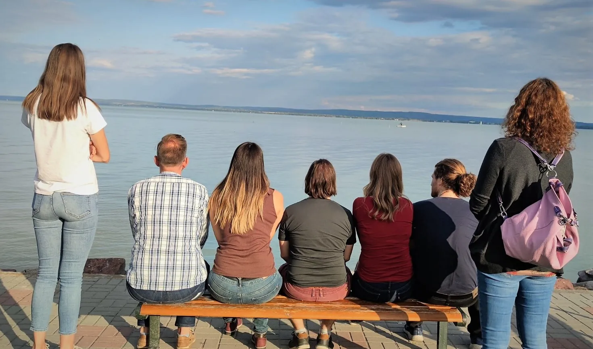

Csoportterápiák
Amit másban meglát,
magában is felismeri
Önismereti, pszichodráma, Bálint és művészetterápiás csoportok képzett vezetőkkel. Az induló csoportokról és a szabad helyekről az ügyfélszolgálat tájékoztat.
A csoportban nem csak a vezető dolgozik Önnel. A többiek története a saját elakadását mutatja meg más szögből, a visszajelzésükből pedig azt tanulja meg, hogyan hat másokra. Ezt egyéni terápiában nem lehet megtapasztalni, csak elmondani.
Négy csoportforma
Mindegyiket a Központ képzett csoportvezetője vezeti. Hogy melyik illik Önhöz, azt az első beszélgetésben nézzük meg.
Önismereti csoport
Rendszeres, beszélgetésre épülő csoport azoknak, akik jobban akarják érteni, miért reagálnak úgy, ahogy: kapcsolatokban, munkában, döntésekben. Nem kell hozzá diagnózis.
felnőtteknekPszichodráma
Nem beszélünk a helyzetről, eljátsszuk. Egy régi jelenet, egy meg nem történt beszélgetés a csoport előtt, szerepekkel és szerepcserével. A vezető pszichodráma-vezető képzettséggel dolgozik.
felnőtteknekBálint-csoport
Segítő hivatásúaknak: orvosoknak, pszichológusoknak, pedagógusoknak, szociális szakembereknek. Egy-egy nehéz esetet hoz valaki, a csoport a segítő és a kliens kapcsolatát nézi, nem a diagnózist.
segítő szakmáknakMűvészetterápiás csoport
Rajz, festés, kollázs, mozgás: ami szóban nem jön, az alkotásban megjelenik. Nem kell tudni rajzolni, a folyamat számít, nem az eredmény.
felnőtteknekInduló csoportok
Mikor indul a következő
A csoportok akkor indulnak, amikor összeáll a kör. A dátumokat és a szabad helyeket ezért nem itt, hanem az ügyfélszolgálatnál tudja meg, mert ott naprakész.
Ügyfélszolgálat hétköznap 9-15 · bejelentkezes@budaipszichologus.hu
- 01
Hívjon vagy írjon, és mondja el, melyik csoport érdekli. Az is jó, ha még nem tudja.
- 02
Vajas Zsuzsanna, fogadó kollégánk elmondja, mi indul, és összeköti a csoportvezetővel.
- 03
A csoportvezető egyezteti Önnel a részleteket: indulás, gyakoriság, díj, és hogy mire számítson az első alkalmon.
Keretek
Ami minden csoportra igaz, és amit csoportonként az ügyfélszolgálat mond meg.
- Vezetés
- Minden csoportot a Központ szakembere vezeti, a szakmai vezetés és a szupervízió rendjében.
- Titoktartás
- Ami a csoportban elhangzik, az ott marad. Ezt az első alkalmon a csoport közösen, szabályként rögzíti.
- Létszám
- Csoporttípustól függ. Az aktuális létszámról az ügyfélszolgálat tájékoztat.
- Időtartam, gyakoriság
- Csoportonként eltér. A pontos keretet a csoportvezető mondja el az indulás előtt.
- Díj
- A csoport díjáról az ügyfélszolgálat tájékoztat. Az egyéni díjsávok az Árak oldalon állnak.
- Egyéni terápia mellett
- Csoport és egyéni terápia párhuzamosan is mehet. Ha van egyéni terapeutája, beszélje meg vele előbb.
Csoportvezetőink
Kik vezetik a csoportokat
A regiszterben a Csoport formára szűrve látja, kik dolgoznak csoporttal a Központban. Ha nem tudja, csoport vagy egyéni terápia illik-e Önhöz, az első beszélgetésben ezt is megnézzük.